Data Wrangling with R
An Introduction to the Tidyverse
Learning Objectives
By the end of this session, students will be able to:
- Explain some benefits of learning R
- Navigate RStudio
- Identify sources of documentation about R packages and functions
- Apply commonly used
tidyversefunctions to a real data set
Why learn R?
R is free, open-source, and cross-platform. Anyone can inspect the source code to see how R works. Because of this transparency, there is less chance for mistakes, and if you (or someone else) find some, you can report and fix bugs. Because R is open source and is supported by a large community of developers and users, there is a very large selection of third-party add-on packages which are freely available to extend R’s native capabilities.
R code is great for reproducibility. Reproducibility is when someone else (including your future self) can obtain the same results from the same dataset when using the same analysis. R integrates with other tools to generate manuscripts from your code. If you collect more data, or fix a mistake in your dataset, the figures and the statistical tests in your manuscript are updated automatically.
R relies on a series of written commands, not on remembering a succession of pointing and clicking. If you want to redo your analysis because you collected more data, you don’t have to remember which button you clicked in which order to obtain your results; you just have to run your script again.
R is interdisciplinary and extensible With 10,000+ packages that can be installed to extend its capabilities, R provides a framework that allows you to combine statistical approaches from many scientific disciplines to best suit the analytical framework you need to analyze your data. For instance, R has packages for image analysis, GIS, time series, population genetics, and a lot more.
R works on data of all shapes and sizes. The skills you learn with R scale easily with the size of your dataset. Whether your dataset has hundreds or millions of lines, it won’t make much difference to you. R is designed for data analysis. It comes with special data structures and data types that make handling of missing data and statistical factors convenient. R can connect to spreadsheets, databases, and many other data formats, on your computer or on the web.
R produces high-quality graphics. The plotting functionalities in R are endless, and allow you to adjust any aspect of your graph to convey most effectively the message from your data.
R has a large and welcoming community. Thousands of people use R daily. Many of them are willing to help you through mailing lists and websites such as Stack Overflow, or on the RStudio community. Questions which are backed up with short, reproducible code snippets are more likely to attract knowledgeable responses.
The Data
For this lesson we will be using data which comes from Project Tycho - an open data project from the University of Pittsburgh which provides standardized datasets on numerous diseases to aid global health research.
Throughout this lesson, we will be using a dataset from Project Tycho featuring historical counts of measles cases in the U.S.. We want to clean and present this data in a way that makes it easy to see how measles cases fluctuated over time.
A useful feature of Project Tycho data is their use of a common set of variables. Read more about their data format.
Starting out in R
R is both a programming language and an interactive environment for data exploration and statistics.
Working with R is primarily text-based. The basic mode of use for R is that the user provides commands in the R language and then R computes and displays the result.
Downloading, Installing and Running R
Download
R can be downloaded from CRAN (The Comprehensive R Archive Network) for Windows, Linux, or Mac.
Install
Installation of R is like most software packages and you will be guided. Should you have any issues or need help you can refer to R Installation and Administration
Running
R can be launched from your software or applications launcher or When working at a command line on UNIX or Windows, the command R can be used for starting the main R program in the form R
You will see a console similar to this appear:
While it is possible to work solely through the console or using a command line interface, the ideal environment to work in R is RStudio.
RStudio
RStudio is a user interface for working with R. It is called an Integrated Development Environment (IDE): a piece of software that provides tools to make programming easier. RStudio acts as a sort of wrapper around the R language. You can use R without RStudio, but it’s much more limiting. RStudio makes it easier to import datasets, create and write scripts, and makes using R much more effective. RStudio is also free and open source. To function correctly, RStudio needs R and therefore both need to be installed on your computer. But for this class we’ll be using a browser based version called RStudio Cloud (see directions in the [RStudio Cloud] section below.)
RStudio is divided into four “panes”. The placement of these panes and their content can be customized (see menu, Tools -> Global Options -> Pane Layout).
The Default Layout is:
- Top Left - Source: your scripts and documents
- Bottom Left - Console: what R would look and be like without RStudio
- Top Right - Environment/History: look here to see what you have done
- Bottom Right - Files and more: see the contents of the project/working directory here, like your Script.R file

Posit Cloud
Posit (RStudio) Cloud is a browser-based version of RStudio. It will allow you to use RStudio without needing to download anything to your computer. You can also easily share your R projects with others. While you will want to download R and RStudio for regular use, we will be using RStudio Cloud for this session so we can all work from the same environment.
Get Started:
- Create your free RStudio Cloud account at https://rstudio.cloud/plans/free.
- Go to the class project https://posit.cloud/content/7985464
- Note the text that marks this as a Temporary Copy. Select the
Save a Permanent Copybutton to begin working!
R Scripts
A script is a document in which you write your code. This makes it easy to re-run that code when you need to. In addition to code, your script can also have comments, which start with a # symbol. These comments make your script more human readable, but are ignored by the computer.
To get started in this lesson - open up the script in your RStudio Project called rwd_lesson.R
Welcome to the Tidyverse
As mentioned above, R can be extended in functionality through the use of packages. In this lesson, we will be using a group of packages which are part of what is known as the tidyverse - “an opinionated collection of R packages designed for data science. All packages share an underlying design philosophy, grammar, and data structures.”1, developed by Hadley Wickham.
These packages include :
readrfor importing data into Rdplyrfor handling common data wrangling tasks for tabular datatidyrwhich enables you to swiftly convert between different data formats (long vs. wide) for plotting and analysislubridatefor working with datesggplot2for visualizing data (we’ll explore this package in the next chapter).
For the full list of tidyverse packages and documentation visit tidyverse.org You can install these packages individually, or you can install the entire tidyverse in one go.
While there are many R packages available, you will be able to accomplish most common data wrangling and analysis tasks with Base R and the tidyverse packages.
What is Tidy Data?
The tidyverse is so named from the concept of “tidy data”. Data is considered “tidy” if it follows three rules:
- Each column is a variable
- Each row is an observation
- Each cell is a single value2
Data “in the wild” often isn’t tidy, but the tidyverse packages can help you create and analyze tidy datasets.

Installing and loading packages
When you first install R on your computer, it comes with a set of built-in packages and functions. To add additional packages, you must first install that package, and then load it into your current session. If you are using the class Posit Cloud project, the tidyverse has already been installed, so we just need to load it. You only need to install a package once on a system, but you will load it each time you start a new r session. If the package had not already been installed, we would install with a function called install.packages().
#install tidyverse if you haven't yet
#install.packages("tidyverse")
#load tidyverse
library(tidyverse)install.packages() and library() are two examples of functions. Functions are one of the most important components of R code. A function is like a canned script. It usually takes some inputs, called arguments inside parentheses following the name of the function, performs one or more tasks, and often returns some kind of output. The library() function takes the name of the package to load as it’s argument.
How do you know what arguments a function takes? For that you need to turn to the documentation of a particular package, or from within RStudio you can look up a function with ?function-name. Let’s try it with the library() function.
?libraryThis opens the help pane in the lower right corner of RStudio. The documentation provides you with all the arguments and any default values, along with explanations of the arguments. Here we see that the the library function has the argument package with no defaults.
Importing data
Now,that the tidyverseis loaded, we can use it to import some data into our RStudio session. We are using a function from the readr package called read_csv(). This function takes as an argument the path to where the file is located. Let’s start by reading in the 2008 beneficiary summary file.
read_csv("data/DE1_0_2008_Beneficiary_Summary_File_Sample_1.csv")Rows: 116352 Columns: 32
── Column specification ────────────────────────────────────────────────────────
Delimiter: ","
chr (5): DESYNPUF_ID, BENE_ESRD_IND, SP_STATE_CODE, BENE_COUNTY_CD, PLAN_CV...
dbl (27): BENE_BIRTH_DT, BENE_DEATH_DT, BENE_SEX_IDENT_CD, BENE_RACE_CD, BEN...
ℹ Use `spec()` to retrieve the full column specification for this data.
ℹ Specify the column types or set `show_col_types = FALSE` to quiet this message.# A tibble: 116,352 × 32
DESYNPUF_ID BENE_BIRTH_DT BENE_DEATH_DT BENE_SEX_IDENT_CD BENE_RACE_CD
<chr> <dbl> <dbl> <dbl> <dbl>
1 00013D2EFD8E45D1 19230501 NA 1 1
2 00016F745862898F 19430101 NA 1 1
3 0001FDD721E223DC 19360901 NA 2 1
4 00021CA6FF03E670 19410601 NA 1 5
5 00024B3D2352D2D0 19360801 NA 1 1
6 0002DAE1C81CC70D 19431001 NA 1 2
7 0002F28CE057345B 19220701 NA 1 1
8 000308435E3E5B76 19350901 NA 1 1
9 000345A39D4157C9 19760901 NA 2 1
10 00036A21B65B0206 19381001 NA 2 2
# ℹ 116,342 more rows
# ℹ 27 more variables: BENE_ESRD_IND <chr>, SP_STATE_CODE <chr>,
# BENE_COUNTY_CD <chr>, BENE_HI_CVRAGE_TOT_MONS <dbl>,
# BENE_SMI_CVRAGE_TOT_MONS <dbl>, BENE_HMO_CVRAGE_TOT_MONS <dbl>,
# PLAN_CVRG_MOS_NUM <chr>, SP_ALZHDMTA <dbl>, SP_CHF <dbl>,
# SP_CHRNKIDN <dbl>, SP_CNCR <dbl>, SP_COPD <dbl>, SP_DEPRESSN <dbl>,
# SP_DIABETES <dbl>, SP_ISCHMCHT <dbl>, SP_OSTEOPRS <dbl>, SP_RA_OA <dbl>, …But doing this just gives us a preview of the data in the console. To really use the data, we need to assign it to an object. An object is like a container for a numerical value, string, data set, image, and much more. Just about everything in R is an object. You might liken them to variables in other programming languages or in math. We create an object, by giving our data a name and use the assignment operator, which looks like an arrow <-. You can manually type in the lesser than sign < and hyphen -, or use the keyboard shortcut Alt + -.
Let’s call our new object bene_2008. Object names should be short and easy to understand. They can’t have spaces, so you’ll want to separate multiple words with a underscore, or by using camel case. Object names also need to start with a letter not a number, and it’s best to avoid using names of common functions.
bene_2008 <- read_csv("data/DE1_0_2008_Beneficiary_Summary_File_Sample_1.csv")When you create an object, it shows up in your environment pane (the upper right panel). If we check our environment pane, we should now see an object called bene_2008.
Exploring and Summarizing data
After reading the data, you will typically want to start exploring it.
Data Frames
First, it’s important to understand the type of object we just created. In R, tabular data like you find in a spreadsheet is stored in a data frame, one of the fundamental data structures in R. A data frame is rectangular, two dimensional data. That is, it has both columns and rows. Data frames can store multiple data types, such as numeric, character, and logical data. Another common data structure is a vector. A vector is a one-dimensional structure. That is, it is simply a sequence of elements. A vector can have only one data type. Data frames are created from multiple vectors, that is, each column in a data frame is a vector. There are several ways of doing this.
Base R functions for exploring data
View() opens the data as a file in your documents pane.This is a good way to see the data in a familiar spreadsheet-like format.
View(bene_2008)Use summary() to look at each column and find the data type and interquartile range for numeric data.
summary(bene_2008)You can look at the beginning of your dataset with head().
head(bene_2008)# A tibble: 6 × 32
DESYNPUF_ID BENE_BIRTH_DT BENE_DEATH_DT BENE_SEX_IDENT_CD BENE_RACE_CD
<chr> <dbl> <dbl> <dbl> <dbl>
1 00013D2EFD8E45D1 19230501 NA 1 1
2 00016F745862898F 19430101 NA 1 1
3 0001FDD721E223DC 19360901 NA 2 1
4 00021CA6FF03E670 19410601 NA 1 5
5 00024B3D2352D2D0 19360801 NA 1 1
6 0002DAE1C81CC70D 19431001 NA 1 2
# ℹ 27 more variables: BENE_ESRD_IND <chr>, SP_STATE_CODE <chr>,
# BENE_COUNTY_CD <chr>, BENE_HI_CVRAGE_TOT_MONS <dbl>,
# BENE_SMI_CVRAGE_TOT_MONS <dbl>, BENE_HMO_CVRAGE_TOT_MONS <dbl>,
# PLAN_CVRG_MOS_NUM <chr>, SP_ALZHDMTA <dbl>, SP_CHF <dbl>,
# SP_CHRNKIDN <dbl>, SP_CNCR <dbl>, SP_COPD <dbl>, SP_DEPRESSN <dbl>,
# SP_DIABETES <dbl>, SP_ISCHMCHT <dbl>, SP_OSTEOPRS <dbl>, SP_RA_OA <dbl>,
# SP_STRKETIA <dbl>, MEDREIMB_IP <dbl>, BENRES_IP <dbl>, PPPYMT_IP <dbl>, …or the end of your dataset with tail()
tail(bene_2008)# A tibble: 6 × 32
DESYNPUF_ID BENE_BIRTH_DT BENE_DEATH_DT BENE_SEX_IDENT_CD BENE_RACE_CD
<chr> <dbl> <dbl> <dbl> <dbl>
1 FFFD1F9EE7AF231B 19390701 NA 1 1
2 FFFD7C464C94D136 19430701 NA 2 1
3 FFFE3ED9582AD46E 19160601 NA 2 1
4 FFFE7AB5D7F1725D 19390401 NA 2 1
5 FFFF29A2E1362059 19110701 NA 1 1
6 FFFF7C107A4E385A 19520401 NA 2 1
# ℹ 27 more variables: BENE_ESRD_IND <chr>, SP_STATE_CODE <chr>,
# BENE_COUNTY_CD <chr>, BENE_HI_CVRAGE_TOT_MONS <dbl>,
# BENE_SMI_CVRAGE_TOT_MONS <dbl>, BENE_HMO_CVRAGE_TOT_MONS <dbl>,
# PLAN_CVRG_MOS_NUM <chr>, SP_ALZHDMTA <dbl>, SP_CHF <dbl>,
# SP_CHRNKIDN <dbl>, SP_CNCR <dbl>, SP_COPD <dbl>, SP_DEPRESSN <dbl>,
# SP_DIABETES <dbl>, SP_ISCHMCHT <dbl>, SP_OSTEOPRS <dbl>, SP_RA_OA <dbl>,
# SP_STRKETIA <dbl>, MEDREIMB_IP <dbl>, BENRES_IP <dbl>, PPPYMT_IP <dbl>, …Notice that this prints out the first and last 6 rows of your data frame to the console in what is called a tibble. A tibble is a form of data frame that is particular to the tidyverse. The differences rest mainly it how it reads and displays data, but for the purposes of this class we will use the terms somewhat interchangeably. The tibble printed from head() and tail() will only print as many columns as can fit on the width of your monitor.
Visually, we may find it helpful to look at the distribution of continuous variables in a histogram. To do this, we can use the base function hist(). We’ll learn more about data visualization later in the lesson.
hist(bene_2008$MEDREIMB_OP)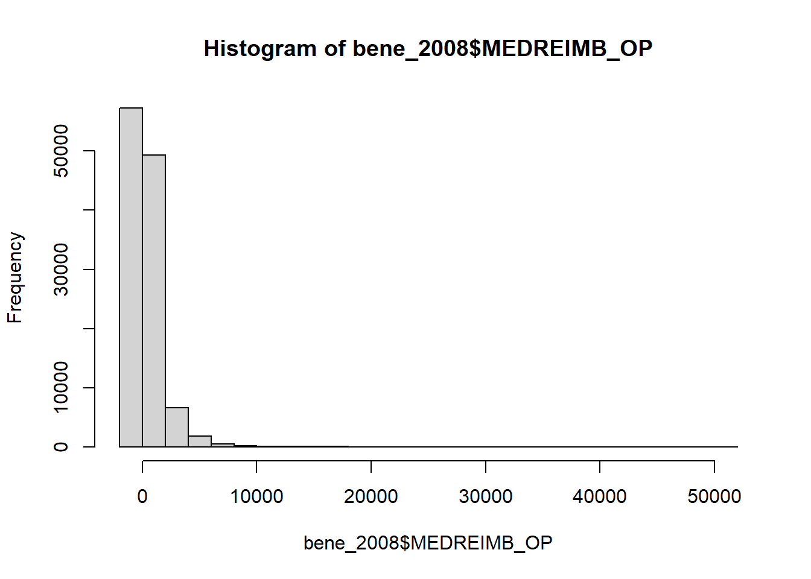
It can also be helpful to know if your data has many missing values. For that you can use the function is.na() or it’s inverse !is.na(). These functions return the logical values TRUE or FALSE. By combining these functions with sum(), we can get the number of missing values, because TRUE = 1 and FALSE = 0 in computer logic. The ! operator stands for NOT so !is.na() is looking for values that are NOT missing.
sum(is.na(bene_2008$BENE_DEATH_DT))[1] 114538sum(!is.na(bene_2008$BENE_DEATH_DT))[1] 1814tidyverse functions for exploring data
The glimpse() function which is part of the tidyverse package tibble, lets you see the column names and data types clearly.
glimpse(bene_2008)distinct() returns the distinct rows in a data frame. It can be used on a column to return the distinct values in that column. For our DE-SynPUF data, we can get this information from the codebook, but for less well-documented data, this is a highly useful function. The first argument you supply is the data frame object. Subsequent arguments include the variables you want to count.
distinct(bene_2008, BENE_RACE_CD)# A tibble: 4 × 1
BENE_RACE_CD
<dbl>
1 1
2 5
3 2
4 3count() is similar to distinct() but also returns the number of observations (i.e. rows) for each of those distinct values. The first argument you supply is the data frame object. Subsequent arguments include the variables you want to count.
count(bene_2008, BENE_SEX_IDENT_CD) # A tibble: 2 × 2
BENE_SEX_IDENT_CD n
<dbl> <int>
1 1 52005
2 2 64347
Make code flow with the pipe %>%
Before we go any further - I want to introduce you to an important time-saving symbol in R called the pipe %>% (CTRL + SHIFT + M). The pipe allows you to take the output of the left-hand expression and make it the input of the right-hand expression. It allows you to chain together multiple functions and avoid nesting. With the pipe, we can rewrite the above code as follows:
bene_2008 %>%
count(BENE_SEX_IDENT_CD)# A tibble: 2 × 2
BENE_SEX_IDENT_CD n
<dbl> <int>
1 1 52005
2 2 64347In many tidyverse functions, the first argument is the name of the data frame you’re applying the function to. So when you use the pipe, you’ll generally start a line of code with the name of a data frame. One benefit you might notice right away, is that when we use the pipe, RStudio will supply the column names which helps to reduce typing and typos.
Let’s try count again, this time with two variables
bene_2008 %>%
count(BENE_SEX_IDENT_CD, BENE_RACE_CD)# A tibble: 8 × 3
BENE_SEX_IDENT_CD BENE_RACE_CD n
<dbl> <dbl> <int>
1 1 1 43058
2 1 2 5408
3 1 3 2282
4 1 5 1257
5 2 1 53291
6 2 2 6935
7 2 3 2649
8 2 5 1472Now we get counts of the combinations of those two categories.
CHALLENGE
- How many people in the data frame have congestive heart failure (CHF)?
- How many people of each race have congestive heart failure?
Subsetting data with select() and filter()
A real world data set could have hundreds of columns and millions of rows. So, once you’ve explored your data, you may want to start trimming it down to just the variables and conditions you’re interested in. In this section, we’ll look at two functions from the tidyverse package called dplyr: select() which lets you choose columns (variables) and filter() which lets you choose rows. (Note: dplyr is known for using easy to understand verbs for its function names.)
Let’s start by filtering our data frame to include only those with CHF. We’ll assign the resulting data frame to a new object
bene_CHF <- bene_2008 %>%
filter(SP_CHF==1)filter() takes the name of the data frame and one or more logical conditions as arguments. Here we are saying keep all the rows where the value in the SP_CHF column is 1. Note the use of the double equals sign == versus the singular = sign. The double equal sign is a logical operator. The logical operators are:
| operator | meaning |
|---|---|
| == | exactly equal |
| != | not equal to |
| < | less than |
| <= | less than or equal to |
| > | greater than |
| >= | greater than or equal to |
| x|y | x or y |
| x&y | x and y |
| !x | not x |
Note that after running our code, our resulting data frame (our new object bene_CHF) has 33155 observations (rows) while our original data frame had 116352.
We can use filter() together with count(). For example, if we want to know how many women with CHF are in our dataframe we can write
bene_2008 %>%
filter(SP_CHF == 1 & BENE_SEX_IDENT_CD == 2) %>%
count()# A tibble: 1 × 1
n
<int>
1 19046Here, we joined together 2 conditions with the & logical operator. Then we piped that resulting data frame to count() which remember takes a data frame as its first argument.
Let’s try figuring out in how many rows of our dataset, the inpatient annual Medicare reimbursement amount is more than 0.
bene_2008 %>%
filter(MEDREIMB_IP > 0) %>%
count()# A tibble: 1 × 1
n
<int>
1 15422Note that without the pipe operator, we’d either have to nest our functions
count(filter(bene_2008, MEDREIMB_IP > 0))# A tibble: 1 × 1
n
<int>
1 15422With more complicated code, that could quickly become difficult to read. Or, we’d have to save a lot of intermediary objects that we don’t really need.
bene_filter <- filter(bene_2008, MEDREIMB_IP > 0)
bene_count <- count(bene_filter)Let’s keep working with our bene_CHF object, and get rid of unneeded variables. We’ll still save our new, smaller data frame to a new object.
bene_CHF_select <- bene_CHF %>%
select(DESYNPUF_ID,
BENE_BIRTH_DT,
BENE_SEX_IDENT_CD,
BENE_RACE_CD,
SP_STATE_CODE,
MEDREIMB_IP,
MEDREIMB_OP)If you look in the environment pane, you’ll see our new object has just 7 variables (columns), compared to our original 32 columns, but the same number of observations (rows) as bene_CHF.
CHALLENGE
- Using
count(), find out how many people of each race and sex are present in ourbene_CHF_selectdata frame - Using
filter(), onbene_2008create a data frame which includes only people in Maryland with end stage renal disease - Use
select()andfilter()to create a data frame with variables that interest you.
Changing and creating variables with mutate()
Let’s remind ourselves about the columns present in our bene_CHF_select data frame.
summary(bene_CHF_select) DESYNPUF_ID BENE_BIRTH_DT BENE_SEX_IDENT_CD BENE_RACE_CD
Length:33155 Min. :19090101 Min. :1.000 Min. :1.000
Class :character 1st Qu.:19261101 1st Qu.:1.000 1st Qu.:1.000
Mode :character Median :19340701 Median :2.000 Median :1.000
Mean :19350312 Mean :1.574 Mean :1.246
3rd Qu.:19410701 3rd Qu.:2.000 3rd Qu.:1.000
Max. :19831201 Max. :2.000 Max. :5.000
SP_STATE_CODE MEDREIMB_IP MEDREIMB_OP
Length:33155 Min. : -3000 Min. : -80
Class :character 1st Qu.: 0 1st Qu.: 70
Mode :character Median : 0 Median : 490
Mean : 6409 Mean : 1341
3rd Qu.: 7000 3rd Qu.: 1450
Max. :164220 Max. :50020 You might notice here something a little funny going on. The columns BENE_BIRTH_DT, BENE_SEX_IDENT_CD, BENE_RACE_CD are being treated as numeric. The summary function is attempting to calculate interquartile ranges for these variables. The race and sex variables are coded. So even though the values are 1 and 2, we want to treat them as categorical variables, not numeric.
Let’s start by changing the the BENE_BIRTH_DT to a formatted date. This will allow us to do calculations like determining age.
bene_mutate <- bene_CHF_select %>%
mutate(BENE_BIRTH_DT = ymd(BENE_BIRTH_DT))
summary(bene_mutate) DESYNPUF_ID BENE_BIRTH_DT BENE_SEX_IDENT_CD BENE_RACE_CD
Length:33155 Min. :1909-01-01 Min. :1.000 Min. :1.000
Class :character 1st Qu.:1926-11-01 1st Qu.:1.000 1st Qu.:1.000
Mode :character Median :1934-07-01 Median :2.000 Median :1.000
Mean :1935-06-05 Mean :1.574 Mean :1.246
3rd Qu.:1941-07-01 3rd Qu.:2.000 3rd Qu.:1.000
Max. :1983-12-01 Max. :2.000 Max. :5.000
SP_STATE_CODE MEDREIMB_IP MEDREIMB_OP
Length:33155 Min. : -3000 Min. : -80
Class :character 1st Qu.: 0 1st Qu.: 70
Mode :character Median : 0 Median : 490
Mean : 6409 Mean : 1341
3rd Qu.: 7000 3rd Qu.: 1450
Max. :164220 Max. :50020 mutate() takes as an argument the name and definition of the new column you’re creating. You can create multiple new columns at a time, separating each new variable name and definition with a comma. Note that if you use the same variable name as an existing variable name it overwrites that column. Otherwise, it will add a column to your data frame.
To change the variable to a date - we are using a date parsing function from another package called lubridate. ymd() takes a a character string or number in year-month-day format and returns a formal date object in YYYY-MM-DD format. There are similar functions if the input date is in month-day-year mdy() or day-month-year dmy()
Now, that BENE_BIRTH_DT is an actual date, we can use it to create an age variable.
bene_mutate <- bene_mutate %>%
mutate(age = 2008 - year(BENE_BIRTH_DT))Now let’s turn our attention to the BENE_RACE_CD and BENE_SEX_IDENT_CD. These are categorical variables. To store categorical variables, R uses a special data type called a factor.
bene_mutate <- bene_mutate %>%
mutate(age = 2008 - year(BENE_BIRTH_DT),
BENE_RACE_CD = as.factor(BENE_RACE_CD),
BENE_SEX_IDENT_CD = as.factor(BENE_SEX_IDENT_CD))R has several functions used for coercing one data type to another such as as.character() and as.numeric().
Grouping and Summarizing
The next step you might want to do in your data analysis is to compare different groups in your study. We can do this with dplyr functions group_by() and summarize(). First let’s group our data by race:
bene_one_group <- bene_mutate %>%
group_by(BENE_RACE_CD)If we run our code, you might notice that apparently not much has changed. group_by() is a preparatory step for other actions. Let’s look at the average in patient reimbursement by race in our data set.
bene_one_group <- bene_mutate %>%
group_by(BENE_RACE_CD) %>%
summarize(mean_ip_reimb = mean(MEDREIMB_IP))We could add another grouping variable to group_by() and another summarized variable to summarize
bene_two_groups <- bene_mutate %>% group_by(BENE_RACE_CD, BENE_SEX_IDENT_CD) %>%
summarize(mean_ip_reimb = mean(MEDREIMB_IP),
mean_op_reimb = mean(MEDREIMB_OP),
n = n())`summarise()` has grouped output by 'BENE_RACE_CD'. You can override using the
`.groups` argument.Visualizing Data with ggplot2
Next, we will learn about ggplot2 - a tidyverse package for visualizing data. It is a powerful and flexible tool that allows you to create fully customizable, publication quality graphics. The gg in ggplot2 stands for grammar of graphics. The grammar of graphics is the underlying philosophy of the package. It focuses on creating graphics in layers. Start with the data – map the data the axes and to aesthetic qualities like size, shape, and color and geometries like dots, lines, and polygons. Further refine the appearance of your plot by adjusting scales and legends, labels, coordinate systems, and adding annotations.
All ggplot2 graphs start with the same basic template:
<DATA> %>%
ggplot(aes(<MAPPINGS>)) +
<GEOM_FUNCTION>() +
<Additional GEOMS, SCALES, THEMES, etc. . . >
All graphs start with the ggplot function and the data. We’ll use the pipe to pipe the data to the function.
bene_mutate %>%
ggplot()
We see that even this initializes the plot area of RStudio.
Next, we define a mapping (using the aesthetic, or aes(), function), by selecting the variables to be plotted and specifying how to present them in the graph, e.g. as x/y positions or characteristics such as size, shape, color, etc. Here we will say that the x axis should contain the affiliation variable. Note how the x-axis populates with some numbers and tick marks.
bene_mutate %>%
ggplot(aes(x=BENE_RACE_CD))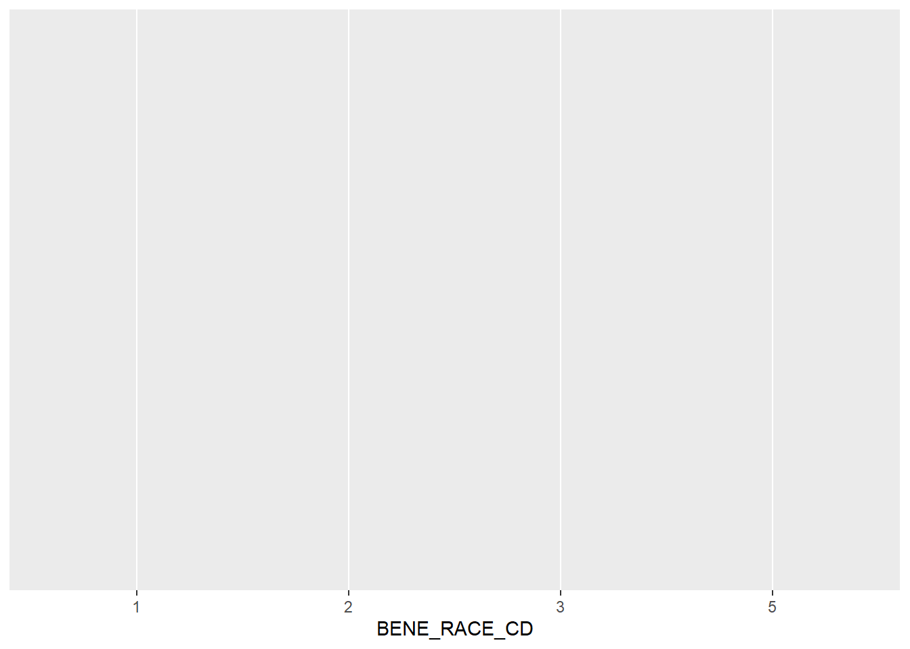
Next we need to add ‘geoms’ – graphical representations of the data in the plot (points, lines, bars). ggplot2 offers many different geoms for common graph types. To add a geom to the plot use the + operator.
bene_mutate %>%
ggplot(aes(x=BENE_RACE_CD)) +
geom_bar()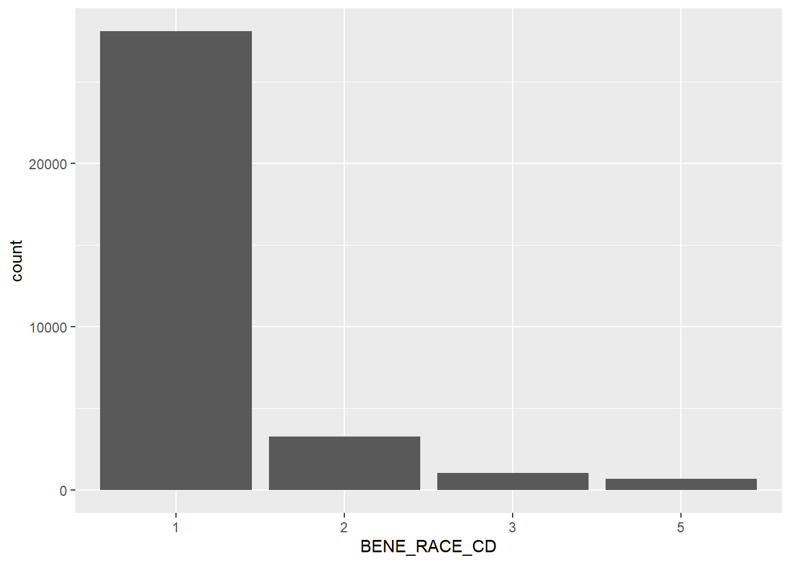
If you want the y axis to display something other than count, you need to make a couple of small adjustments. First - specify the y variable in the aes() function, and change the stat argument from it’s default of “count” to “identity” This tells it to base the y axis on the specified variable.
bene_one_group %>%
ggplot(aes(x=BENE_RACE_CD, y=mean_ip_reimb)) +
geom_bar(stat = "identity")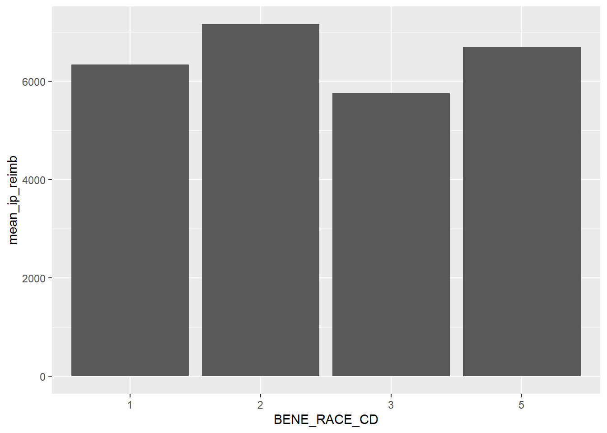
Setting vs mapping aesthetics
When working with ggplot2, it’s important to understand the difference between setting aesthetic properties and mapping them. All geoms have certain visual attributes that can be modified. Polygons like bars, have the properties fill and color. You can change the inside color of a bar with fill, and the border with color. We can modify the defaults with the fill and color arguments in the geom_bar() layer. (I’ve also increased the linewidth to make it easier to see the border color)
bene_one_group %>%
ggplot(aes(x=BENE_RACE_CD, y=mean_ip_reimb)) +
geom_bar(stat = "identity",
fill="blue",
color="purple",
linewidth=1.5,
width = 0.8) +
theme_minimal()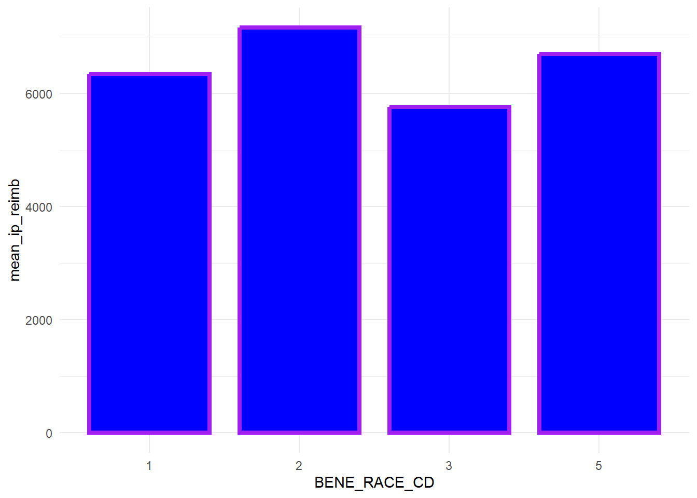
Note
How did we know the color names “blue” and “purple” would work in the code above? R has 657 (!!) built in color names. You can see them by calling the function colors(). You can also specify colors using rgb and hexadecimal codes.
Now we have manually set a value for the fill and color. To create our initial graph, we used the mapping argument and the aes() function to map the x axis to the BENE_RACE_CD variable. Watch what happens if we map the fill property to the BENE_RACE_CD variable as well.
bene_one_group %>%
ggplot(aes(x=BENE_RACE_CD, y=mean_ip_reimb, fill=BENE_RACE_CD)) +
geom_bar(stat = "identity", position = "dodge")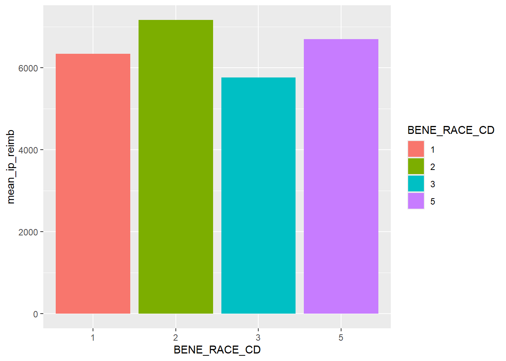
Building a grouped bar chart
Mapping a variable to an aesthetic is especially useful when we have third variable we want to express on our graph. For example, what if we want to compare mean inpatient reimbursement by both race and sex? To do this we can create a grouped bar chart by mapping fill to the BENE_SEX_IDENT_CD variable.
bene_two_groups %>%
ggplot(aes(x=BENE_RACE_CD, y=mean_ip_reimb, fill=BENE_SEX_IDENT_CD)) +
geom_bar(stat = "identity")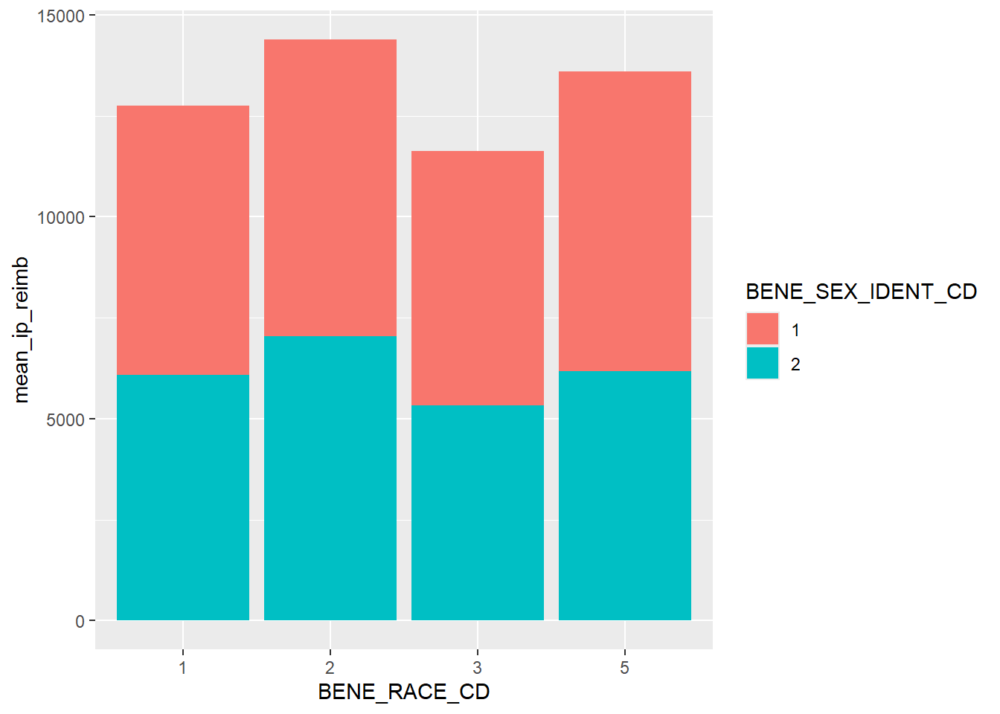
Note
When you map an aesthetic with aes() in the ggplot() function it is inherited by all subsequent layers. When you map in a geom_*() function it is applied only to that layer.
BY default this creates a stacked bar chart. To make it grouped, we add a position="dodged" argument to geom_bar()
bene_two_groups %>%
ggplot(aes(x=BENE_RACE_CD, y=mean_ip_reimb, fill=BENE_SEX_IDENT_CD)) +
geom_bar(stat = "identity", position = "dodge")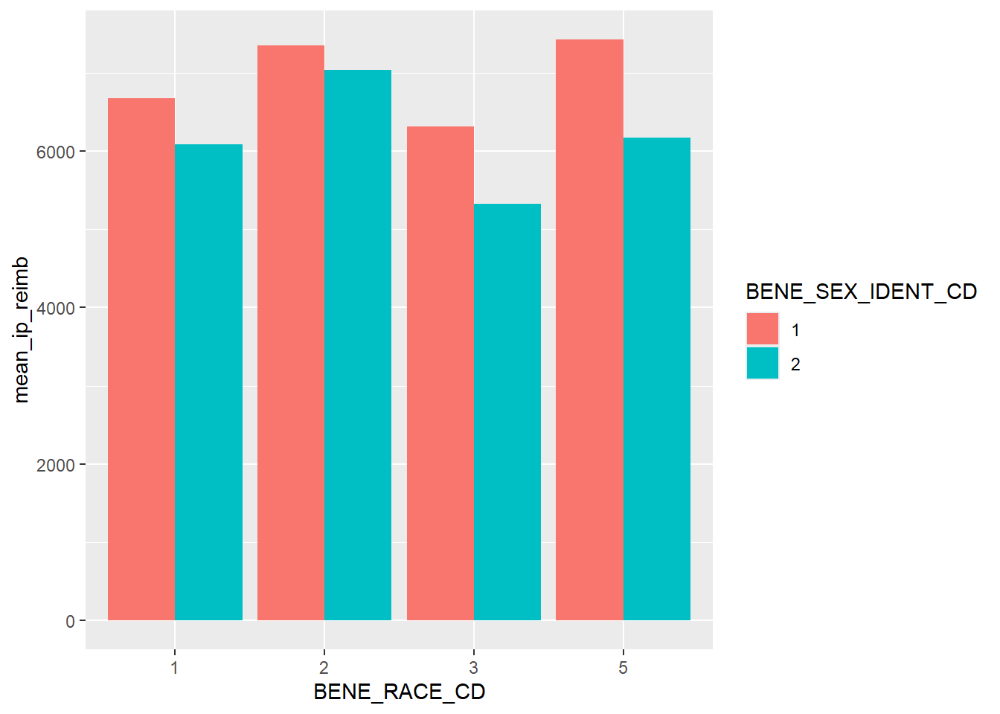
To make our graph look less crowded, we can also modify the width of the bars. Note this is done outside of the aes() function.
bene_two_groups %>%
ggplot(aes(x=BENE_RACE_CD, y=mean_ip_reimb, fill=BENE_SEX_IDENT_CD)) +
geom_bar(stat = "identity", position = "dodge", width=0.75)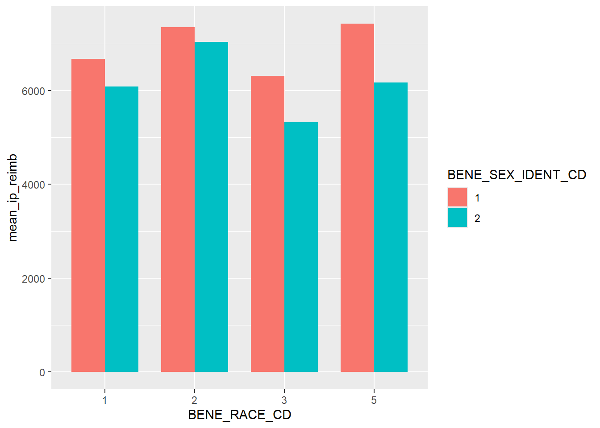
Adding titles and axis labels
A good plot communicates clearly. So far we’ve talked about achieving this through the aesthetic aspects of your plot, but it’s important to make sure your graph has a clear title and axis labels as well. There are a few ways to do this in ggplot2, but one of the simplest is to use the labs() function.
bene_two_groups %>%
ggplot(aes(x=BENE_RACE_CD, y=mean_ip_reimb, fill=BENE_SEX_IDENT_CD)) +
geom_bar(stat = "identity", position = "dodge", width=0.75) +
labs(title = "Mean Inpatient annual Medicare reimbursement amount \n for patients with CHF",
subtitle = "By Race and Sex",
x = "Race",
y = "Mean reimbursement amount")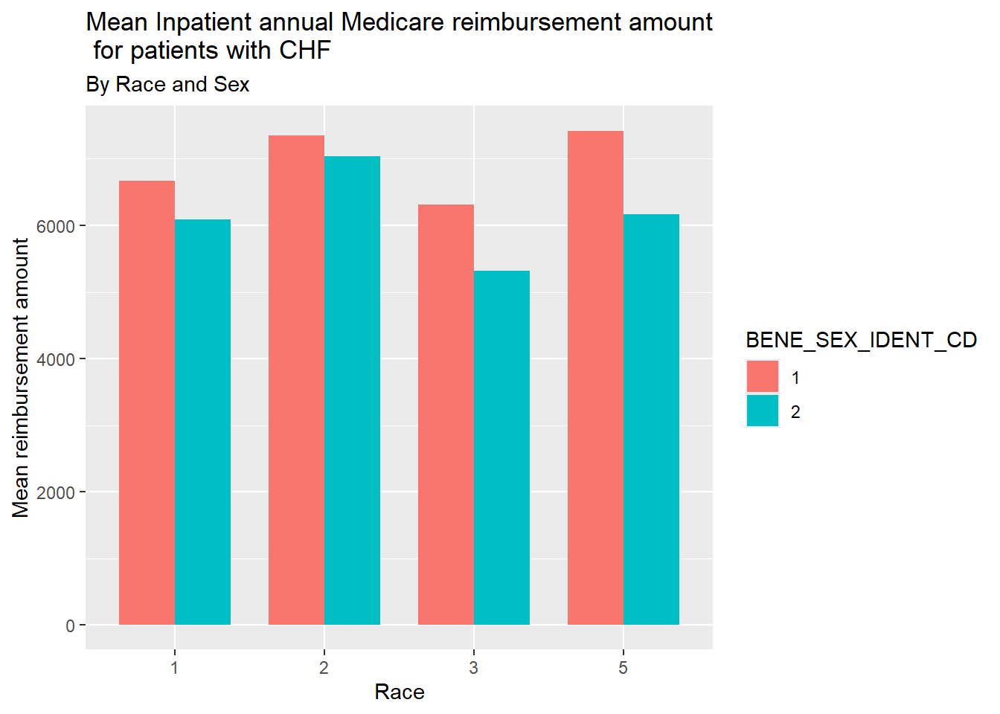
We can also change the labels of the tick marks and the legend with the scale_* family of functions. Choose the right function by looking for the one with the appropriate axis and data type. This function has a labels = argument that takes a character vector of label names. So we’ll choose
bene_two_groups %>%
ggplot(aes(x=BENE_RACE_CD, y=mean_ip_reimb, fill=BENE_SEX_IDENT_CD)) +
geom_bar(stat = "identity", position = "dodge", width=0.75) +
labs(title = "Mean Inpatient annual Medicare reimbursement amount \n for patients with CHF",
subtitle = "By Race and Sex",
x = "Race",
y = "Mean reimbursement amount") +
scale_x_discrete(labels=c("White", "Black", "Others", "Hispanic")) +
scale_fill_discrete(name = "Sex", labels=c("Male", "Female"))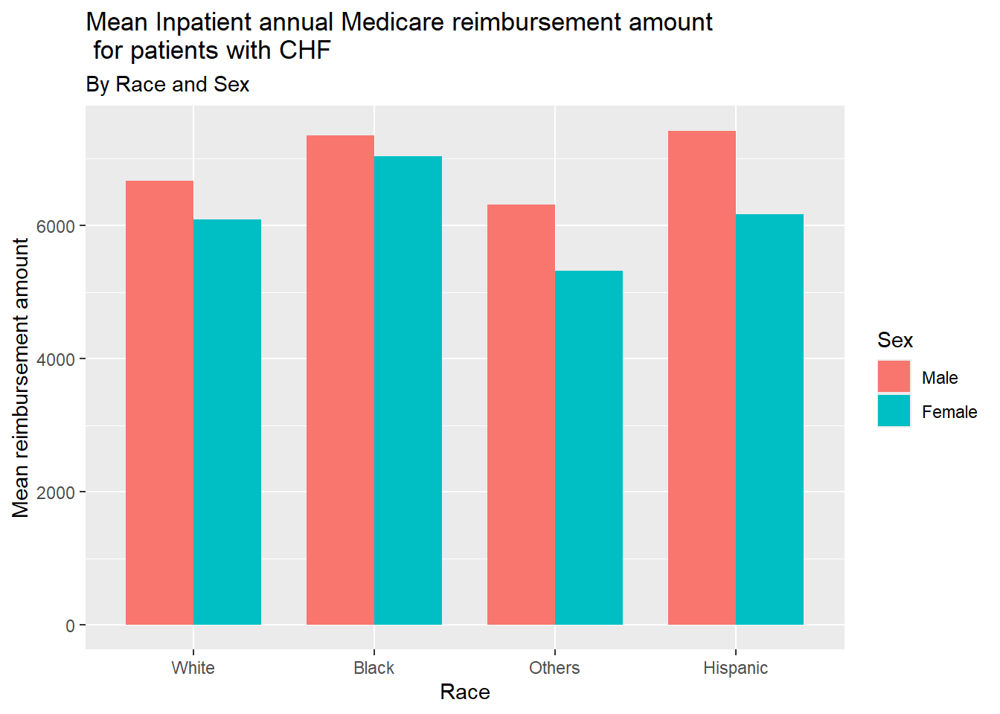
Working with color palettes
While ggplot comes with a default color palette, there are numerous other palettes out there you can use, such as:
Let’s try applying a viridis palette. viridis was designed to be especially robust for many forms of color-blindness. It is also meant to print well in grey scale. As an additional advantage, a lightweight form of the package is included with ggplot2, so there is no need to install additional packages.
To do this, we need to change our function scale_fill_discrete() to scale_viridis_d()
bene_two_groups %>%
ggplot(aes(x=BENE_RACE_CD, y=mean_ip_reimb, fill=BENE_SEX_IDENT_CD)) +
geom_bar(stat = "identity", position = "dodge", width=0.75) +
labs(title = "Mean Inpatient annual Medicare reimbursement amount \n for patients with CHF",
subtitle = "By Race and Sex",
x = "Race",
y = "Mean reimbursement amount") +
scale_x_discrete(labels=c("White", "Black", "Others", "Hispanic")) +
scale_fill_viridis_d(name = "Sex", labels=c("Male", "Female"))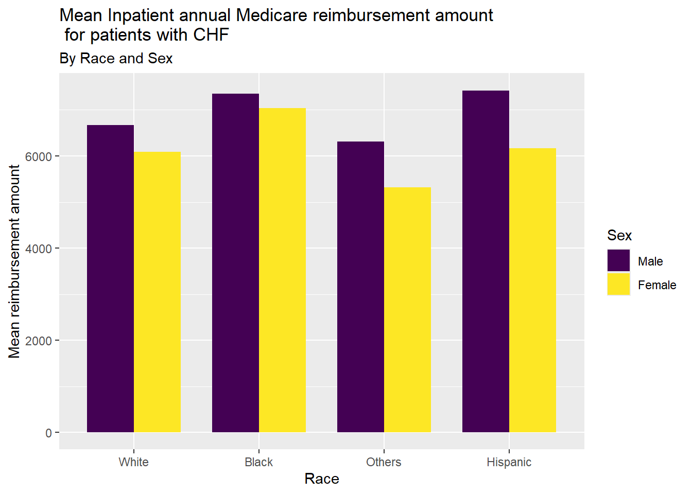
Learn more from the viridis documentation
Changing the theme
The theme of a ggplot2 graph controls the overall look and all non-data elements of the plot. There are several built-in themes which can be applied as another layer. Start typing theme_ in RStudio to see a list of themes. You can also use the theme() function to modify aspects of an existing theme. Here we apply theme_classic() which removes the grid lines and grey background of the default theme.
bene_two_groups %>%
ggplot(aes(x=BENE_RACE_CD, y=mean_ip_reimb, fill=BENE_SEX_IDENT_CD)) +
geom_bar(stat = "identity", position = "dodge", width=0.75) +
labs(title = "Mean Inpatient annual Medicare reimbursement amount \n for patients with CHF",
subtitle = "By Race and Sex",
x = "Race",
y = "Mean reimbursement amount") +
scale_x_discrete(labels=c("White", "Black", "Others", "Hispanic")) +
scale_fill_viridis_d(name = "Sex", labels=c("Male", "Female")) +
theme_classic()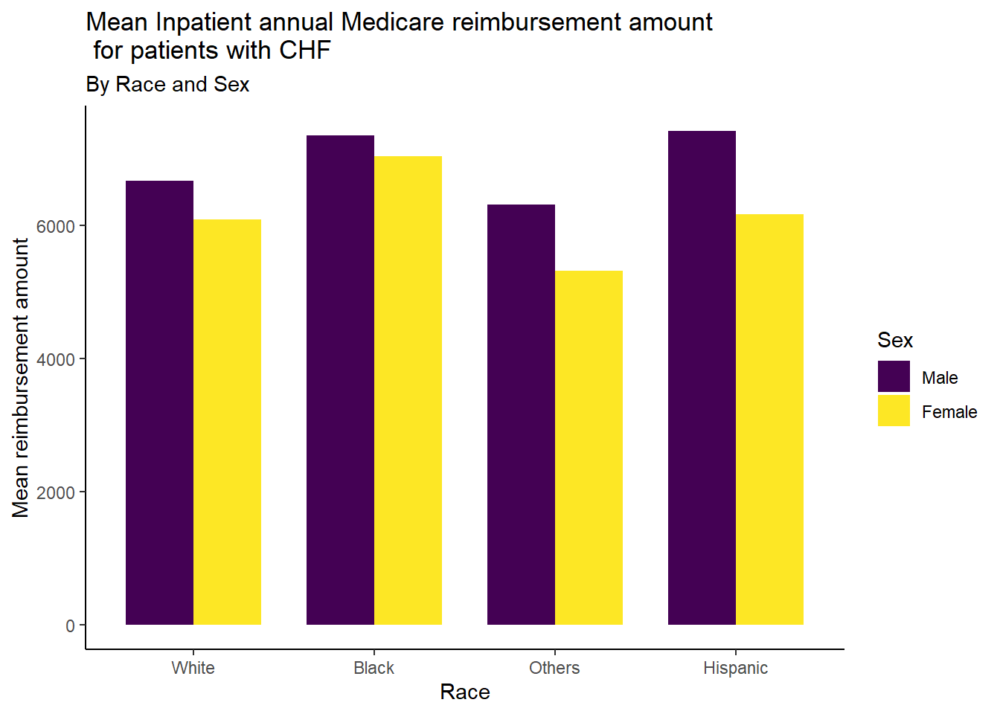
Joining datasets
DE-SynPUF data is divided into multiple tables, and so far we’ve only worked with one. All the tables are linked by a variable called DESYNPUF_ID. This variable allows a researcher to track an individual through the different files. In this lesson, we’ll learn how to join these files so you can combine demographic data with clinical data about visits and prescription drugs use.
One way of combining tables is through concatenation. This would be appropriate for the three beneficiary summary files which each contain the same variables, but for different years.
First, we need to import the remaining two summary files. Let’s also import the inpatient sample file. We’ll work with that next.
bene_2009 <- read_csv("data/DE1_0_2009_Beneficiary_Summary_File_Sample_1.csv")Rows: 114538 Columns: 32
── Column specification ────────────────────────────────────────────────────────
Delimiter: ","
chr (5): DESYNPUF_ID, BENE_ESRD_IND, SP_STATE_CODE, BENE_COUNTY_CD, PLAN_CV...
dbl (27): BENE_BIRTH_DT, BENE_DEATH_DT, BENE_SEX_IDENT_CD, BENE_RACE_CD, BEN...
ℹ Use `spec()` to retrieve the full column specification for this data.
ℹ Specify the column types or set `show_col_types = FALSE` to quiet this message.bene_2010 <- read_csv("data/DE1_0_2010_Beneficiary_Summary_File_Sample_1.csv")Rows: 112754 Columns: 32
── Column specification ────────────────────────────────────────────────────────
Delimiter: ","
chr (5): DESYNPUF_ID, BENE_ESRD_IND, SP_STATE_CODE, BENE_COUNTY_CD, PLAN_CV...
dbl (27): BENE_BIRTH_DT, BENE_DEATH_DT, BENE_SEX_IDENT_CD, BENE_RACE_CD, BEN...
ℹ Use `spec()` to retrieve the full column specification for this data.
ℹ Specify the column types or set `show_col_types = FALSE` to quiet this message.bene_ip <- read_csv("data/DE1_0_2008_to_2010_Inpatient_Claims_Sample_1.csv")Rows: 66773 Columns: 81
── Column specification ────────────────────────────────────────────────────────
Delimiter: ","
chr (23): DESYNPUF_ID, PRVDR_NUM, AT_PHYSN_NPI, OP_PHYSN_NPI, OT_PHYSN_NPI, ...
dbl (13): CLM_ID, SEGMENT, CLM_FROM_DT, CLM_THRU_DT, CLM_PMT_AMT, NCH_PRMRY_...
lgl (45): HCPCS_CD_1, HCPCS_CD_2, HCPCS_CD_3, HCPCS_CD_4, HCPCS_CD_5, HCPCS_...
ℹ Use `spec()` to retrieve the full column specification for this data.
ℹ Specify the column types or set `show_col_types = FALSE` to quiet this message.To concatenate files, we use the function bind_rows(). This takes the names of data frames we want to join as arguments. There is also an optional argument .id= which creates a column to identify which data frame the row came from.
bene_all <- bind_rows(bene_2008, bene_2009, bene_2010, .id = "File")To combine a summary file with a file like the inpatient sample, we would use a join to match rows based on the DESYNPUF_ID. There are different join functions available, based on what you are trying to accomplish. These terms may be familiar if you’ve ever worked with SQL and relational databases:
- An
inner_join(): keeps only the observations from data framexthat have a matching key in data framey - A
left_join()keeps all observations inx. - A
right_join()keeps all observations iny. - A
full_join()keeps all observations inxandy.
Here, we will use an inner join, and keep only the observations (rows) from the 2010 beneficiary summary that are present in the inpatient sample file. That is, if a beneficiary did not file any inpatient claims, they would not be present in our resulting table.
Let’s first trim our bene_2010 data frame to just a few variables, and then use the inner_join() function to link it to the bene_ip data frame. We’ll use the by = argument to name the variable (column) to join on. The name of the variable must be a string in this argument (indicated by putting it in quotes).
bene_ip_join <- bene_2010 %>%
filter(SP_CHF == 1) %>%
select(DESYNPUF_ID,
BENE_BIRTH_DT,
BENE_DEATH_DT,
BENE_SEX_IDENT_CD,
BENE_RACE_CD) %>%
inner_join(bene_ip, by = "DESYNPUF_ID")Next Steps: From BeginnR to PractitionR
I hope you enjoyed this very brief introduction to R. You may be wondering - where do you go from here?
There are tons of R classes and tutorials on the internet, but the best way to learn R is to use it! I recommend picking a data set and just playing around. There’s no harm in making mistakes along the way. It’s much easier to find a useful tutorial if you look for ones that teach a specific task you want to accomplish.
Also, check out these helpful resources:
- R for Data Science, by Hadley Wickham
- Tidyverse documentation
- R Graph Gallery
- R Graphics Cookbook